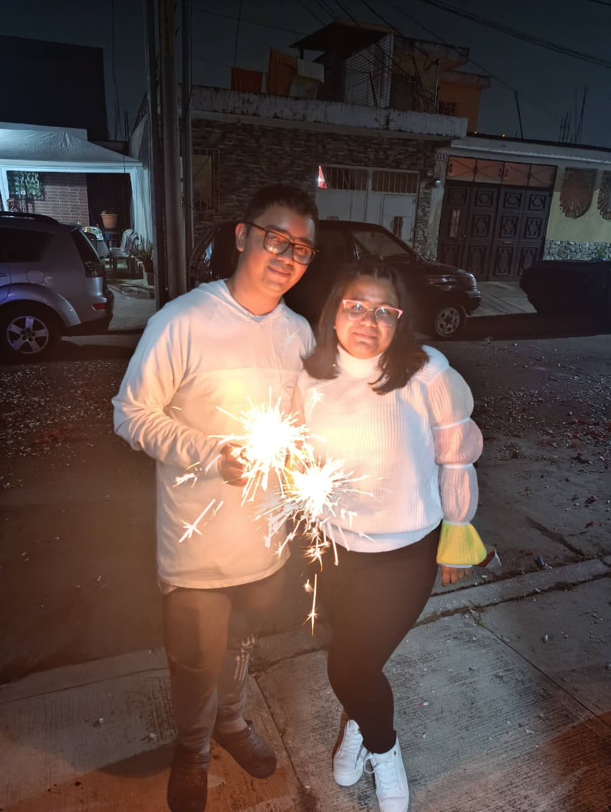
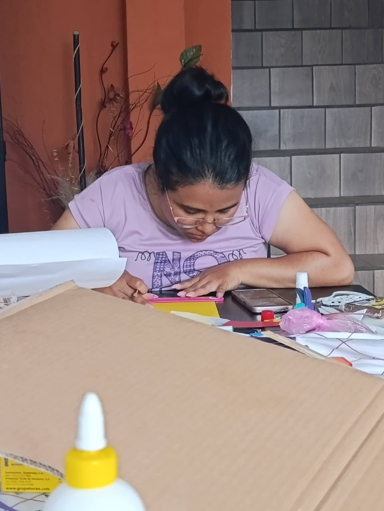
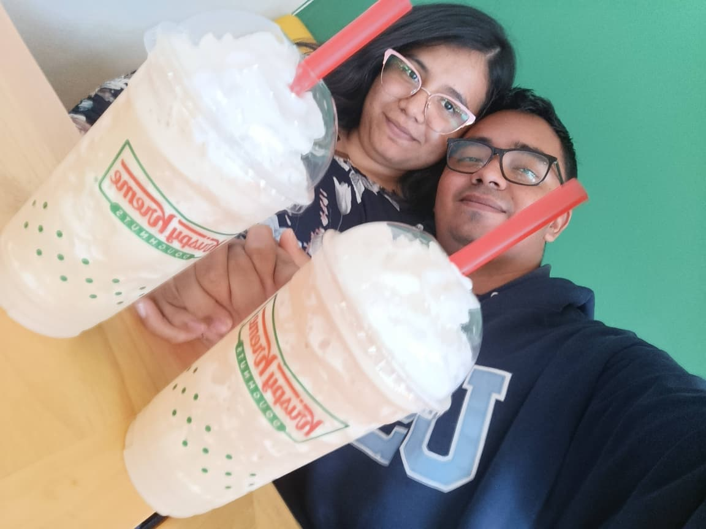
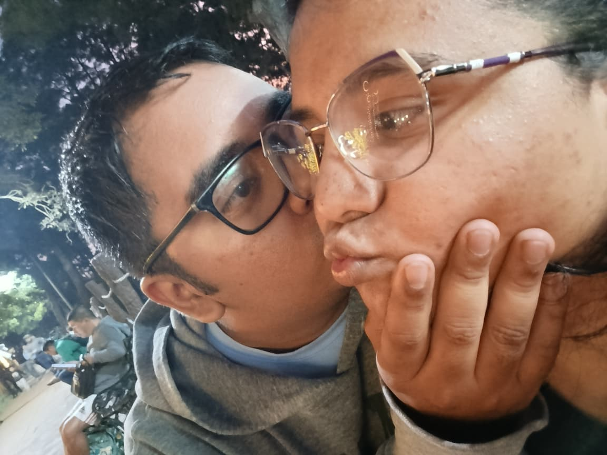
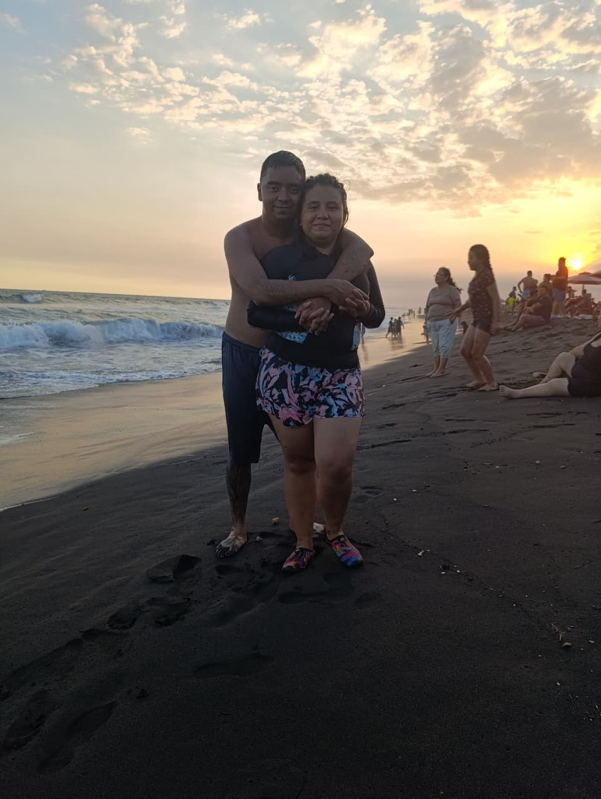
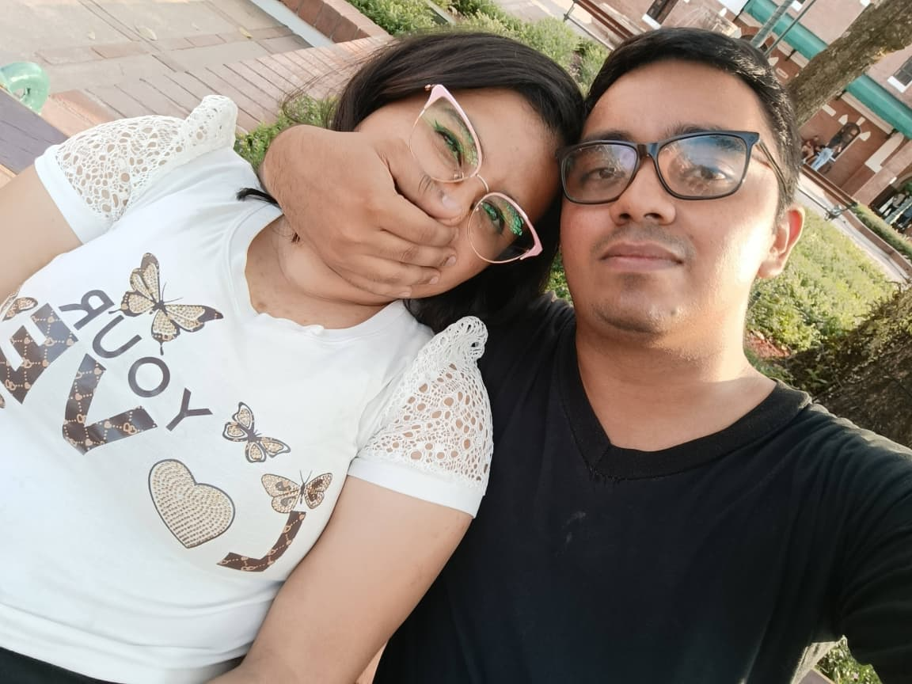
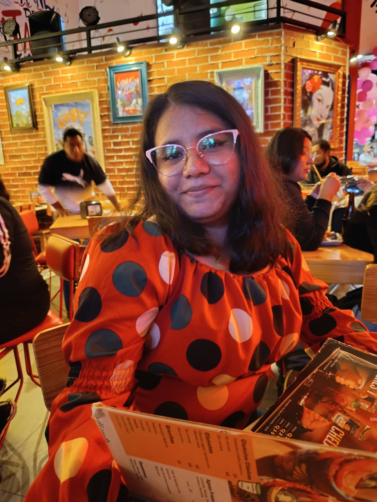
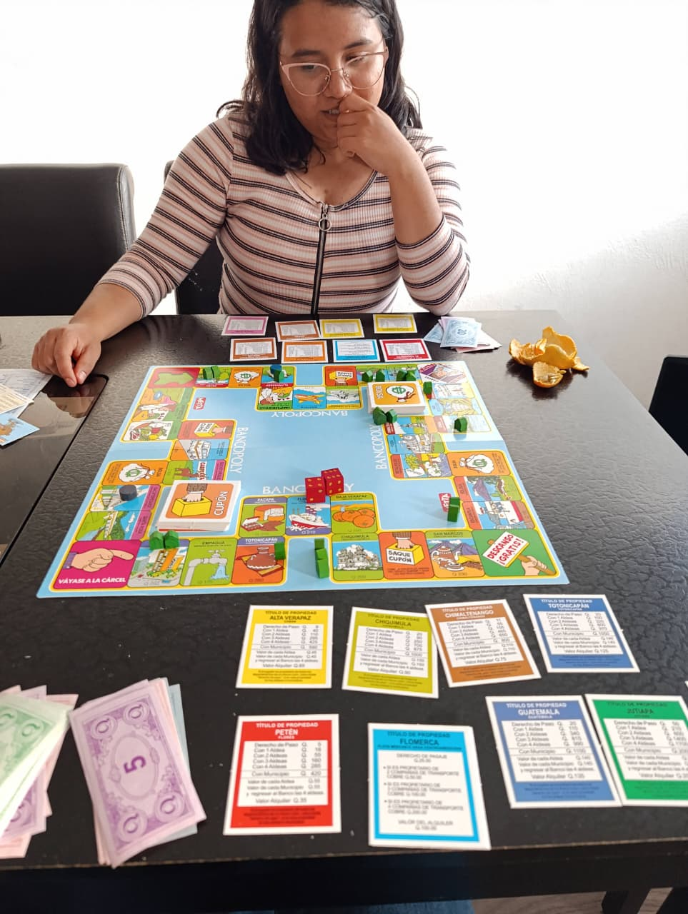
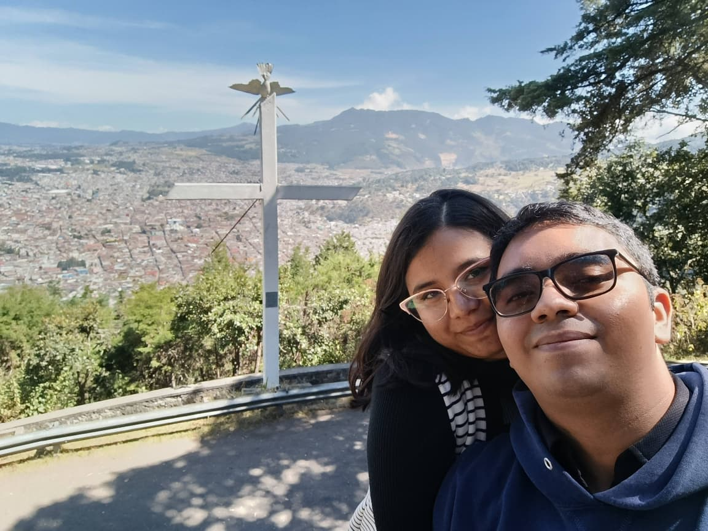
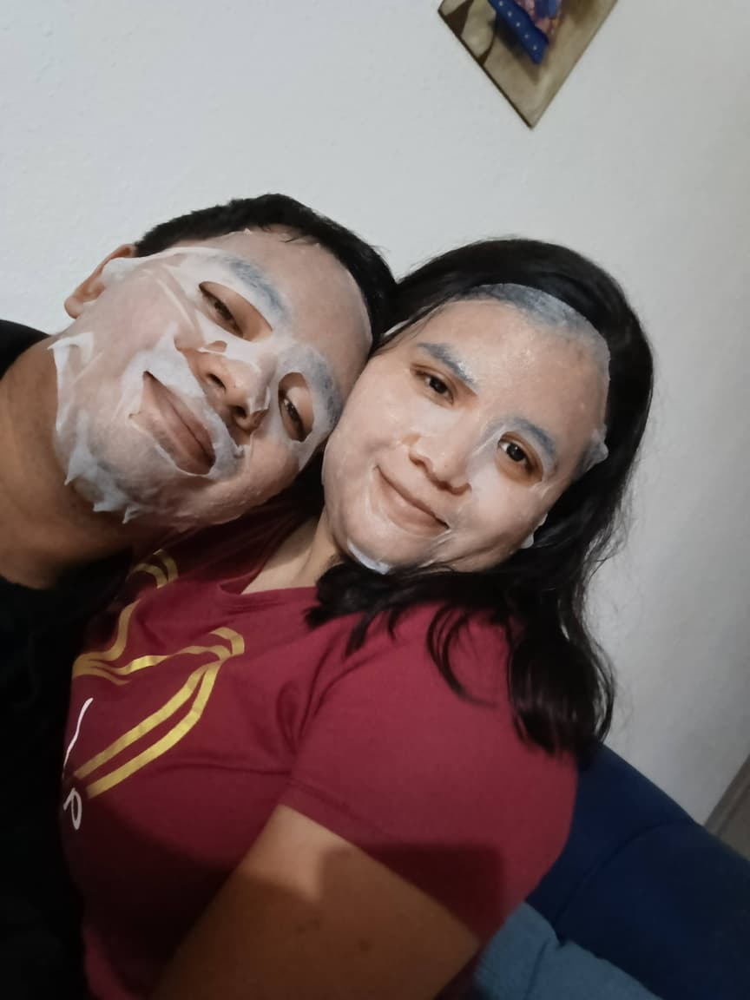

Diez recuerdos nuestros, guardados aquí para volver a mirarlos cuando quieras.

01
Nuestra foto favorita
Ese día en que todo se sintió perfecto.

02
Una aventura juntos
Donde sea, si es contigo.

03
Una sonrisa tuya
Mi vista favorita.

04
Un momento inolvidable
Uno de muchos capítulos que nos faltan.

05
Nuestra foto espontánea
Porque lo imperfecto también es precioso.

06
Otro recuerdo bonito
Una parte más de nuestra historia.

07
Un día especial
Siempre hay algo que volver a recordar.

08
Juntos, como siempre
Un recuerdo que quiero tener cerca.

09
Una tarde contigo
Los momentos sencillos también son mis favoritos.

10
Nuestro siguiente recuerdo
Todavía nos quedan muchas historias por vivir.
Pista: haz doble clic o pulsa Enter sobre un recuerdo para descubrir algo.
♥
Helen, ven aquí un momento
Cierra los ojos y respira conmigo. Imagina mis brazos alrededor de ti y mi voz diciéndote: estoy aquí, te amo y no tienes que pasar por esto sola. En cuanto pueda, volveré contigo.